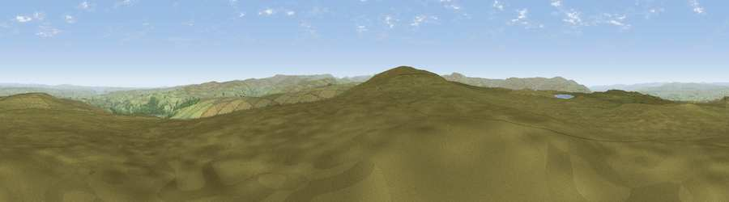

Viewpoint near Slaggyford
#7084 in England · top 17% of its area beats it · near SlaggyfordThe view, rendered

A 360° render of this exact spot computed from the terrain model, tree cover and land cover — summer colours, afternoon light, calibrated against photographs of famous viewpoints. Real trees, hedges and buildings will differ in detail.
The panorama
Grey silhouette: terrain skyline in each direction (720 bearings, Earth curvature and refraction included). Dashed green: skyline with trees (+15 m) and buildings (+8 m) as obstacles. Blue strip: how far the ground is visible on each bearing.
Where the view opens
Wedge length = distance to the farthest visible ground on that bearing (vegetation-aware). Rings at 10, 25 and 50 km.
What fills the view
95% grassland · 5% woodland
Angular shares of the visible panorama (visual magnitude), not map area. Landscape diversity 0.10 (0–1 Shannon).
Key numbers
More beautiful places nearby
The staircase of upgrades: each row has a higher view potential than everything closer. Driving times are estimates from straight-line distance, calibrated against real road routing — check an actual route before setting out.
| Place | Direction | Drive | Score |
|---|---|---|---|
| Viewpoint near Slaggyford | SSW · 0 km | ~1 min | 70.0 |
| Grey Nag | SW · 9 km | ~18 min | 75.7 |
| Viewpoint near Renwick | SW · 13 km | ~25 min | 77.0 |
| Viewpoint near Cumrew | WSW · 15 km | ~27 min | 77.2 |
| Viewpoint near Cumrew | W · 17 km | ~30 min | 78.8 |
| Barrock Fell | WSW · 27 km | ~43 min | 81.1 |
| Viewpoint near Watermillock | SW · 43 km | ~63 min | 82.6 |
| Viewpoint near Watermillock | SW · 43 km | ~63 min | 83.5 |
54.88250, -2.42042 · source: screening · position refined by local search. Computed location — check access rights before visiting.